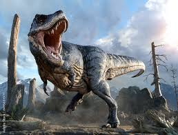

Tyrannosaurus
The Tyrannosaurus, commonly referred to as Tyrannosaurus rex, or T-rex, is possibly the most famous
dinosaur in the
world. The name is actually their genus and species name, Tyrannosaurus rex, and scientists believe
there may be
another species in the Tyrannosaurus genus!
While the possibly related Tarbosaurus might technically be a member of Tyrannosaurus, this article
will
be
discussing Tyrannosaurus rex. Read on to learn about the Tyrannosaurus.
Description of the Tyrannosaurus
While no one has seen this species in person, scientists have a decent estimation of the overall
appearance of
Tyrannosaurus. Based on fossilized specimens, the scientists estimate that T-rex stood approximately
12
ft. tall at
the hip, and grew about 40 ft. long. These massive creatures were some of the largest land
carnivores to
roam this
earth. The Tyrannosaurus had a large head, very small front legs, and muscular rear legs.